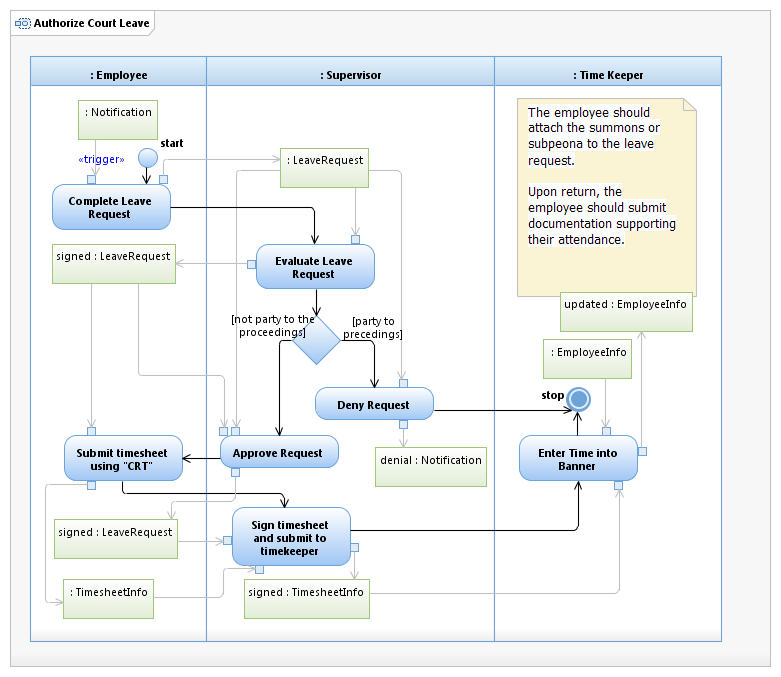

Use Case Model: Authorize Court Leave

Use Case Model: Authorize Court Leave
Architect: Aaron Brown, IT Enterprise Architect Senior
Date Last Modified: 3/19/2013
User Review: Linda Escamilla, Sharon Huckabee, Shelly Sheppard
Date: 3/19/2013
When the employee is summoned or supoena'd, Jury Summons, Letter of request, the timesheet processing requires specials codes and approval.
Use Case Model: Authorize Court Leave

Activity Model: Authorize Court Leave